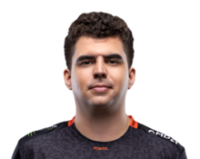

This is a website dedicated to teaching someone League of Legends in the fastest, most effective way. Only teaching the main essentials and providing other resources to further improve.
It is split into 4 main sections, The Client, The Game, Champions to Play and Resources.
The Client
League of Legends unlike most games, has its own client instead of using a 3rd party software like Steam. This sections covers how to use it, good strategies to maximise your resources (we'll cover what that means) as well as how special events work.
The Game
This section will cover how the game works, key things to pay attention to as well as what your job will be playing each role.
Champions to Play
League of Legends at the time of writing this has 153 champions and that number is only going up so it can be overwhelming to pick who to play. This section will cover some champ suggestions for each lane that are easy to learn which will allow you to learn them quickly so you can spend time learning the game instead of the champion.
Resources
This will provide links to useful websites that can help you further improve as well as showing some useful youtube channels.
Here are some pro league players for your viewing pleasures.
 |
||
|  |